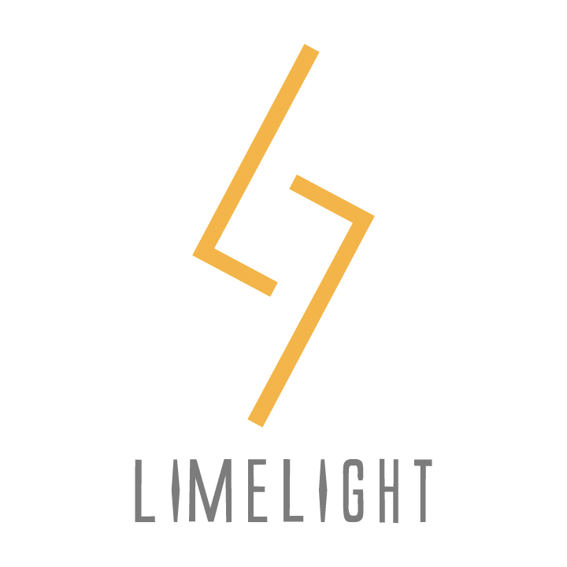

/LIMELIGHT
短い映画、PV、MVを制作しています。
新入生の皆さん！
— ライムライト@映像制作団体 (@kglimelight) April 21, 2020
新しいこと、したいと思いませんか？
LIMELIGHTは、アカデミックコモンズ・プロジェクトとして、映像制作しています！
映像、編集、脚本、撮影、演技…
１つでも興味があれば、私たちと映像制作を楽しみませんか？#春から関学 #関学 #アカデミックコモンズ・プロジェクト #新入生 pic.twitter.com/HkHUMs6W2D
映像制作に興味があれば、初心者でも大歓迎です。脚本、撮影、編集、演技のどれかに興味があれば、ぜひ入ってみてください！今日は放課後活動日！
— ライムライト@映像制作団体 (@kglimelight) December 20, 2019
前回撮影した素材を使って編集してます！
1年生が、premiere proの使い方講座を担当してくれました。 pic.twitter.com/JzcfRz2prh
/活動日
毎週火曜 昼休み
月に3回 金曜日 5限後に放課後活動
/所属人数
14人